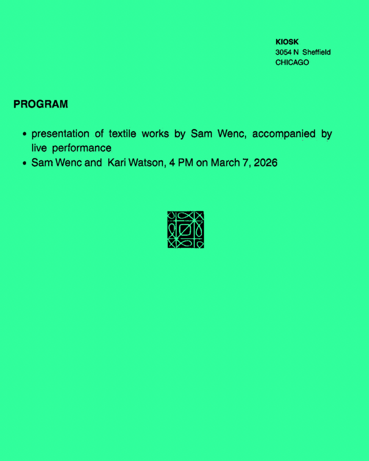

 Sound and Textiles Saturday, March 7, 2026KIOSK3054 N Sheffield Ave, Chicago, IL 60657 Opening Saturday, March 7th, from 4PM - 5PM Official website Textiles by Sam Wenc with a sound performance by Sam Wenc and Kari Watson. Kari WatsonKIOSKSam WencSound and Textiles More events on this date Original listing